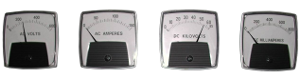

This condition will definitely affect the performance of the Precipitator since any field not operating correctly will have impact on the outlet emissions. Indications are as follows:
Possible causes of the above events are as follows:
This condition occurs when there is no load on the TR set HV Bushing. The first step in determining the cause is to check that the TR disconnect switches are properly made. If they are, place a temporary ground on the high voltage bushing of the TR. If the TR is a double half wave configuration (two output bushings) make sure the two bushings are tied together for full wave operation. With a ground on the secondary of the TR the control should reach the primary or secondary current limit programmed into the control, and low primary voltage with no secondary voltage. If rated current is present the problem lies in an open circuit between the TR output bushings and the support bushing tie-in point for the high voltage frame. If after grounding the TR high voltage bushing(s) the current is still zero, the problem lies within the TR set, megger the primary and secondary of the TR per the manufacturer’s instructions. If an open circuit exits on the primary, the TR will have to be removed for repair. If the open is on the secondary, remove and check the full wave diode bridge for an open leg(s). If the diode bridge is open, replace the diode stack and retest. If the current is still zero, check the RF coils located between the diode bridge and the output bushing(s) for an open condition. If the no current condition still exists the secondary winding of the transformer core is open and the core will need to be replaced.